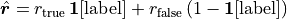
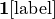

N-MNIST Classification
N-MNIST is the neuromorphic version of MNIST digit recognition. The MNIST digits are converted into event based data using a DVS sensor moving in a repatable tri-saccadic motion each about 100 ms long.
The task is to classify each event sequence to it’s corresponding digit.
|
|
|
|
|


NMNIST dataset is freely available here (© CC-4.0).
Orchard, G.; Cohen, G.; Jayawant, A.; and Thakor, N. “Converting Static Image Datasets to Spiking Neuromorphic Datasets Using Saccades”, Frontiers in Neuroscience, vol.9, no.437, Oct. 2015
[1]:
import os, sys
import glob
import zipfile
import h5py
import numpy as np
import matplotlib.pyplot as plt
import torch
from torch.utils.data import Dataset, DataLoader
# import slayer from lava-dl
import lava.lib.dl.slayer as slayer
import IPython.display as display
from matplotlib import animation
Create Dataset
The dataset class follows standard torch dataset definition. They are defined in nmnist.py. We will just import the dataset and augmentation routine here.
[2]:
from nmnist import augment, NMNISTDataset
Create Network
A slayer network definition follows standard PyTorch way using torch.nn.Module.
The network can be described with a combination of individual synapse, dendrite, neuron and axon components. For rapid and easy development, slayer provides block interface - slayer.block - which bundles all these individual components into a single unit. These blocks can be cascaded to build a network easily. The block interface provides additional utilities for normalization (weight and neuron), dropout, gradient monitoring and network export.
In the example below, slayer.block.cuba is illustrated.
[3]:
class Network(torch.nn.Module):
def __init__(self):
super(Network, self).__init__()
neuron_params = {
'threshold' : 1.25,
'current_decay' : 0.25,
'voltage_decay' : 0.03,
'tau_grad' : 0.03,
'scale_grad' : 3,
'requires_grad' : True,
}
neuron_params_drop = {**neuron_params, 'dropout' : slayer.neuron.Dropout(p=0.05),}
self.blocks = torch.nn.ModuleList([
slayer.block.cuba.Dense(neuron_params_drop, 34*34*2, 512, weight_norm=True, delay=True),
slayer.block.cuba.Dense(neuron_params_drop, 512, 512, weight_norm=True, delay=True),
slayer.block.cuba.Dense(neuron_params, 512, 10, weight_norm=True),
])
def forward(self, spike):
for block in self.blocks:
spike = block(spike)
return spike
def grad_flow(self, path):
# helps monitor the gradient flow
grad = [b.synapse.grad_norm for b in self.blocks if hasattr(b, 'synapse')]
plt.figure()
plt.semilogy(grad)
plt.savefig(path + 'gradFlow.png')
plt.close()
return grad
def export_hdf5(self, filename):
# network export to hdf5 format
h = h5py.File(filename, 'w')
layer = h.create_group('layer')
for i, b in enumerate(self.blocks):
b.export_hdf5(layer.create_group(f'{i}'))
Instantiate Network, Optimizer, DataSet and DataLoader
Running the network in GPU is as simple as selecting torch.device('cuda').
[4]:
trained_folder = 'Trained'
os.makedirs(trained_folder, exist_ok=True)
# device = torch.device('cpu')
device = torch.device('cuda')
net = Network().to(device)
optimizer = torch.optim.Adam(net.parameters(), lr=0.001)
training_set = NMNISTDataset(train=True, transform=augment)
testing_set = NMNISTDataset(train=False)
train_loader = DataLoader(dataset=training_set, batch_size=32, shuffle=True)
test_loader = DataLoader(dataset=testing_set , batch_size=32, shuffle=True)
NMNIST dataset is freely available here: https://www.garrickorchard.com/datasets/n-mnist
(c) Creative Commons:
Orchard, G.; Cohen, G.; Jayawant, A.; and Thakor, N.
"Converting Static Image Datasets to Spiking Neuromorphic Datasets Using Saccades",
Frontiers in Neuroscience, vol.9, no.437, Oct. 2015
Visualize the input data
A slayer.io.Event can be visualized by invoking it’s Event.show() routine. Event.anim() instead returns the event visualization animation which can be embedded in notebook or exported as video/gif. Here, we will export gif animation and visualize it.
[5]:
for i in range(5):
spike_tensor, label = testing_set[np.random.randint(len(testing_set))]
spike_tensor = spike_tensor.reshape(2, 34, 34, -1)
event = slayer.io.tensor_to_event(spike_tensor.cpu().data.numpy())
anim = event.anim(plt.figure(figsize=(5, 5)), frame_rate=240)
anim.save(f'gifs/input{i}.gif', animation.PillowWriter(fps=24), dpi=300)
[6]:
gif_td = lambda gif: f'<td> <img src="{gif}" alt="Drawing" style="height: 250px;"/> </td>'
header = '<table><tr>'
images = ' '.join([gif_td(f'gifs/input{i}.gif') for i in range(5)])
footer = '</tr></table>'
display.HTML(header + images + footer)
[6]:
 |  |  |  |  |
Error module
Slayer provides prebuilt loss modules: slayer.loss.{SpikeTime, SpikeRate, SpikeMax}. * SpikeTime: precise spike time based loss when target spike train is known. * SpikeRate: spike rate based loss when desired rate of the output neuron is known. * SpikeMax: negative log likelihood losses for classification without any rate tuning.
Since the target spike train is not known for this problem, we use SpikeRate loss and target high spiking rate for true class and low spiking rate for false class.
target rate:  where  is one-hot encoding of label. The loss is:

[7]:
error = slayer.loss.SpikeRate(true_rate=0.2, false_rate=0.03, reduction='sum').to(device)
Stats and Assistants
Slayer provides slayer.utils.LearningStats as a simple learning statistics logger for training, validation and testing.
In addtion, slayer.utils.Assistant module wraps common training validation and testing routine which help simplify the training routine.
[8]:
stats = slayer.utils.LearningStats()
assistant = slayer.utils.Assistant(net, error, optimizer, stats, classifier=slayer.classifier.Rate.predict)
Training Loop
Training loop mainly consists of looping over epochs and calling assistant.train and assistant.test utilities over training and testing dataset. The assistant utility takes care of statndard backpropagation procedure internally.
statscan be used in print statement to get formatted stats printout.stats.testing.best_accuracycan be used to find out if the current iteration has the best testing accuracy. Here, we use it to save the best model.stats.update()updates the stats collected for the epoch.stats.savesaves the stats in files.
[9]:
epochs = 100
for epoch in range(epochs):
for i, (input, label) in enumerate(train_loader): # training loop
output = assistant.train(input, label)
print(f'\r[Epoch {epoch:2d}/{epochs}] {stats}', end='')
for i, (input, label) in enumerate(test_loader): # training loop
output = assistant.test(input, label)
print(f'\r[Epoch {epoch:2d}/{epochs}] {stats}', end='')
if epoch%20 == 19: # cleanup display
print('\r', ' '*len(f'\r[Epoch {epoch:2d}/{epochs}] {stats}'))
stats_str = str(stats).replace("| ", "\n")
print(f'[Epoch {epoch:2d}/{epochs}]\n{stats_str}')
if stats.testing.best_accuracy:
torch.save(net.state_dict(), trained_folder + '/network.pt')
stats.update()
stats.save(trained_folder + '/')
net.grad_flow(trained_folder + '/')
[Epoch 19/100]
Train loss = 0.11669 (min = 0.11887) accuracy = 0.96173 (max = 0.96188)
Test loss = 0.07722 (min = 0.07424) accuracy = 0.97720 (max = 0.97770)
[Epoch 39/100]
Train loss = 0.09383 (min = 0.09434) accuracy = 0.97182 (max = 0.97180)
Test loss = 0.06004 (min = 0.06169) accuracy = 0.98240 (max = 0.98250)
[Epoch 59/100]
Train loss = 0.08660 (min = 0.08739) accuracy = 0.97570 (max = 0.97692)
Test loss = 0.05640 (min = 0.05682) accuracy = 0.98490 (max = 0.98420)
[Epoch 79/100]
Train loss = 0.08141 (min = 0.08102) accuracy = 0.97768 (max = 0.97808)
Test loss = 0.05284 (min = 0.05230) accuracy = 0.98500 (max = 0.98660)
[Epoch 99/100]
Train loss = 0.07434 (min = 0.07396) accuracy = 0.97933 (max = 0.97993)
Test loss = 0.05019 (min = 0.04633) accuracy = 0.98540 (max = 0.98720)
Plot the learning curves
Plotting the learning curves is as easy as calling stats.plot().
[10]:
stats.plot(figsize=(15, 5))


Export the best model
Load the best model during training and export it as hdf5 network. It is supported by lava.lib.dl.netx to automatically load the network as a lava process.
[11]:
net.load_state_dict(torch.load(trained_folder + '/network.pt'))
net.export_hdf5(trained_folder + '/network.net')
Visualize the network output
Here, we will use slayer.io.tensor_to_event method to convert the torch output spike tensor into slayer.io.Event object and visualize a few input and output event pairs.
[12]:
output = net(input.to(device))
for i in range(5):
inp_event = slayer.io.tensor_to_event(input[i].cpu().data.numpy().reshape(2, 34, 34, -1))
out_event = slayer.io.tensor_to_event(output[i].cpu().data.numpy().reshape(1, 10, -1))
inp_anim = inp_event.anim(plt.figure(figsize=(5, 5)), frame_rate=240)
out_anim = out_event.anim(plt.figure(figsize=(10, 5)), frame_rate=240)
inp_anim.save(f'gifs/inp{i}.gif', animation.PillowWriter(fps=24), dpi=300)
out_anim.save(f'gifs/out{i}.gif', animation.PillowWriter(fps=24), dpi=300)
[13]:
html = '<table>'
html += '<tr><td align="center"><b>Input</b></td><td><b>Output</b></td></tr>'
for i in range(5):
html += '<tr>'
html += gif_td(f'gifs/inp{i}.gif')
html += gif_td(f'gifs/out{i}.gif')
html += '</tr>'
html += '</tr></table>'
display.HTML(html)
[13]:
| Input | Output |
 |  |
 |  |
 |  |
 |  |
 |  |